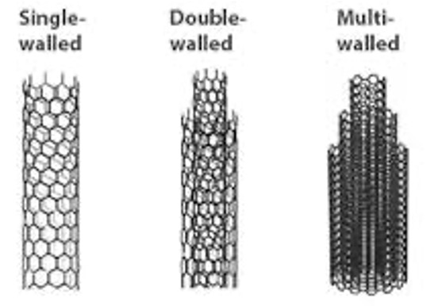
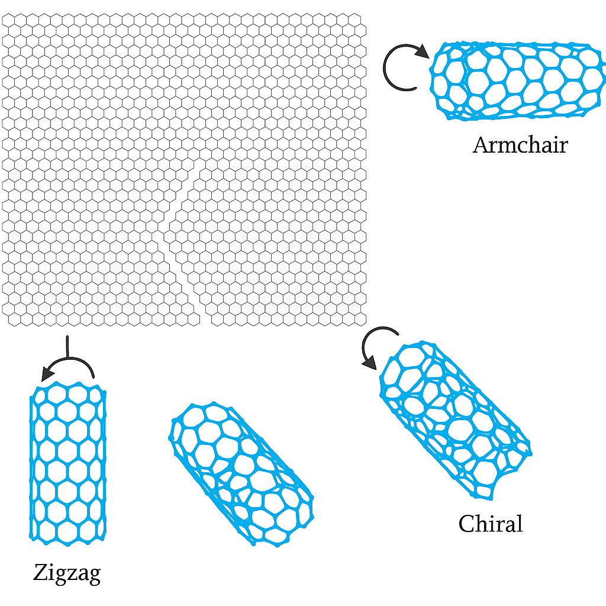
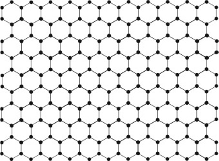
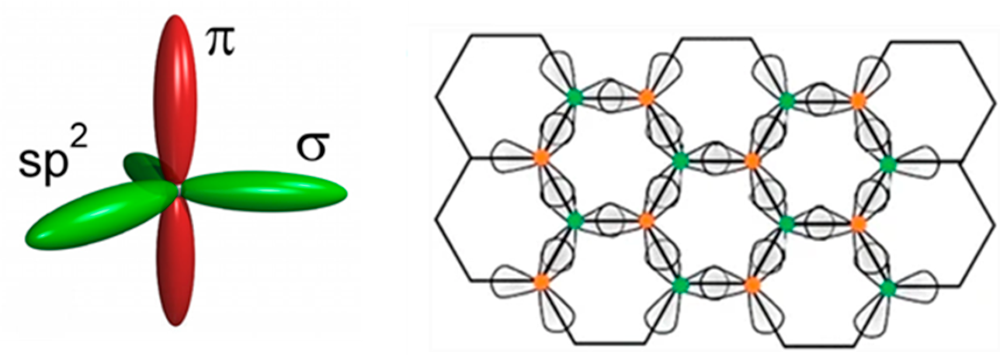

10. Introduction to Carbon Nanomaterials#
Nanomaterials are materials that have structural features at the nanometer scale, typically below 100 nm. Carbon nanomaterials exhibit unique mechanical, electrical, and thermal properties, making them essential in modern technology.
10.1 Carbon Nanotubes (CNTs)#
Carbon Nanotubes (CNTs) are cylindrical structures made entirely of carbon atoms arranged in a hexagonal lattice, similar to graphene. Imagine a sheet of graphene rolled into a seamless cylinder.
There are two main types:
Single-Walled Carbon Nanotubes (SWCNTs) – made of one graphene cylinder.
Multi-Walled Carbon Nanotubes (MWCNTs) – multiple concentric graphene cylinders.

Fig 10.1. Single wall and multiwall structures.
10.1.1 Structure#
We can think of rolling up a sheet graphene, and the way it’s rolled defines the properties of the CNT. In realisty this is not how CNTs are made - they are chemically synthesised and the starting material is not graphene!
Each carbon atom is sp² hybridised, forming three strong sigma (σ) bonds with neighbouring carbon atoms.
The remaining unhybridised p orbital forms a delocalised π-bonding system, extending above and below the tube surface — similar to that in benzene or graphite.
10.1.2 Chirality and Types#
The way the graphene is rolled is described by the chiral vector (n, m), which leads to different types of CNTs:
Armchair (n = m): Metallic
Zigzag (m = 0 or n = 0): Can be metallic or semiconducting
Chiral (n ≠ m): Usually semiconducting
This impacts their electronic properties.
 Fig 10.2 CNT structures thinking of them like rolled up graphene sheets.
10.1.3 Physical Properties#
10.1.3.1 Mechanical Strength#
CNTs are extremely strong – stronger than steel (by weight).
High Young’s modulus (~1 TPa) – they’re very stiff.
Very high tensile strength (~100 times that of steel).
10.1.3.2 Electrical Properties#
Can behave as metals or semiconductors depending on chirality.
Ballistic conduction: electrons travel with minimal scattering over long distances.
Potential use in nanoscale transistors, wires, and quantum devices.
10.1.3.3 Thermal Conductivity#
Excellent thermal conductors along the tube (~3000–6000 W/m·K).
Poor heat conductors across the tube walls due to weak van der Waals forces.
10.1.3.4 Density and Size#
Very low density: ~1.3–1.4 g/cm³.
Typical diameter: ~1 nm (SWCNT), up to 50 nm (MWCNT).
Length: from micrometres up to centimetres.
10.1.3.5 Summary Table#
Property |
Description |
|---|---|
Structure |
Rolled graphene cylinder |
Types |
SWCNT, MWCNT |
Chirality (n,m) |
Determines metallic or semiconducting |
Strength |
Extremely high (100× steel) |
Electrical conductivity |
Ballistic, metallic/semiconducting |
Thermal conductivity |
Very high along the tube |
Density |
Low (~1.3 g/cm³) |
Size |
Diameter ~1–50 nm; length: µm to cm |
10.1.3.6 Key Equations:#
Electrical Conductivity:
\(\sigma = \frac{q n \mu}{m}\)
where \( q \) is the charge, \( n \) is the carrier density, \( \mu \) is the mobility, and \( m \) is the effective mass.
Thermal Conductivity:
\(k = \frac{C_p v l}{3}\)
10.1.4 Example Calculation:#
Find the electrical conductivity of a CNT if charge \( q = 1.6 \times 10^{-19} \) C, carrier density \( n = 10^{28} \) electrons/m³, mobility \( \mu = 0.1 \) m²/Vs, and effective mass \( m = 9.1 \times 10^{-31} \) kg.
Solution:
\(\sigma = \frac{(1.6 \times 10^{-19}) (10^{28}) (0.1)}{9.1 \times 10^{-31}}\)
\(\sigma = \frac{1.6 \times 10^8}{9.1 \times 10^{-31}}\)
\(\sigma = 1.76 \times 10^7 \text{ S/m}\)
10.1.5 Applications#
Electronics: transistors, interconnects.
Composite materials: strong and lightweight materials.
Energy storage: batteries, supercapacitors.
Sensors: chemical and biological sensing.
Medical: drug delivery, imaging.
10.2 Graphene#
 
Fig 10.3 Schematic diagrams of graphene structure.
10.2.1 Structural Features and Bonding:#
Two-Dimensional Structure: Graphene consists of a single atomic layer of carbon atoms arranged in a hexagonal (honeycomb) lattice.
sp² Hybridisation: Each carbon atom forms three sigma (σ) bonds with neighboring carbons using sp² orbitals, creating a strong, planar network.
Delocalised π-electrons: The fourth valence electron in each carbon atom occupies a p orbital perpendicular to the plane. These p orbitals overlap, forming a delocalised π-system across the sheet.
This π-system is responsible for graphene’s excellent electrical conductivity, as electrons can move freely across the plane.
✅ The unique sp² bonding gives graphene its combination of strength, flexibility, and conductivity.
10.2.2 Physical Properties#
High Electrical Conductivity: Due to the delocalized π-electrons acting as mobile charge carriers.
High Mechanical Strength: Young’s modulus of ~1 TPa — stronger than steel.
High Thermal Conductivity: ~5000 W/m·K — among the highest known for any material.
Optical Transparency: Absorbs only ~2.3% of visible light, despite being a single atom thick.
Large Surface Area: ~2630 m²/g — useful for energy storage and chemical sensing.
10.2.3 Applications#
Nanoelectronics#
High carrier mobility (~200,000 cm²/V·s) makes graphene ideal for high-speed transistors and quantum devices.
Flexible Electronics#
Thin, strong, and conductive — perfect for foldable displays, smart textiles, and wearables.
Energy Storage#
Used in supercapacitors and Li-ion batteries, where its high surface area and conductivity improve charge capacity and cycle life.
Biomedical Applications#
Graphene’s biocompatibility and electrical conductivity are ideal for biosensors, drug delivery systems, and neural interfaces.
Water Filtration#
Graphene oxide membranes can selectively remove ions and molecules, enabling desalination and water purification.
Heat Dissipation#
Used in thermal interface materials for microprocessors and LEDs due to ultrahigh thermal conductivity.
Composites & Coatings#
Enhances the mechanical, thermal, and electrical performance of polymers, metals, and ceramics in structural applications.
Optoelectronics#
Transparent and conductive — useful for photodetectors, touchscreens, and next-gen optical circuits.
10.2.4 Key Equation#
Conductivity of Graphene:
\(\sigma = \frac{e^2}{h}\)
Where:
\( e = 1.6 \times 10^{-19} \) C (electron charge)
\( h = 6.63 \times 10^{-34} \) J·s (Planck’s constant)
10.2.5 Example Calculation#
Find the conductivity of graphene:
\(\sigma = \frac{(1.6 \times 10^{-19})^2}{6.63 \times 10^{-34}} = \frac{2.56 \times 10^{-38}}{6.63 \times 10^{-34}} = 3.86 \times 10^{-5} \text{ S}\)
⚠️ Note: This simplified example shows quantum conductance per channel. In real graphene sheets, multiple conduction channels and sample geometry influence the total conductivity.
10.2.6 Comparison of Graphene and Carbon Nanotubes (CNTs)#
Property |
Graphene |
Carbon Nanotubes (CNTs) |
|---|---|---|
Structure |
2D planar sheet of carbon atoms in a hexagonal lattice |
Cylindrical tubes made from rolled-up graphene sheets |
Bonding |
sp² hybridised C–C bonds with delocalised π-electrons across a flat sheet |
sp² hybridised C–C bonds; π-electrons delocalised along the tube wall |
Dimensions |
One atom thick; infinite in 2D plane (idealised) |
1D structures: diameter ~1–100 nm, length up to mm |
Electrical Conductivity |
Very high; charge carriers behave like massless Dirac fermions |
Metallic or semiconducting, depending on chirality (n, m) |
Thermal Conductivity |
Extremely high (~5000 W/m·K) |
High along tube axis (~3000 W/m·K); anisotropic |
Mechanical Strength |
Young’s modulus ~1 TPa; high intrinsic strength |
Similar modulus; extremely high tensile strength (~50× stronger than steel) |
Flexibility |
Flexible but brittle under out-of-plane strain |
Highly flexible and elastic; can bend without breaking |
Surface Area |
~2630 m²/g |
High surface area (varies by type); accessible surface area less than graphene |
Transparency |
Absorbs ~2.3% of visible light; nearly transparent |
Opaque in bulk; individual SWNTs can be optically transparent |
Bandgap |
Zero bandgap (semimetal) |
Bandgap depends on chirality; can be metallic or semiconducting |
Application Emphasis |
Transistors, sensors, coatings, transparent electronics |
Transistors, reinforced composites, nanoscale wires and actuators |